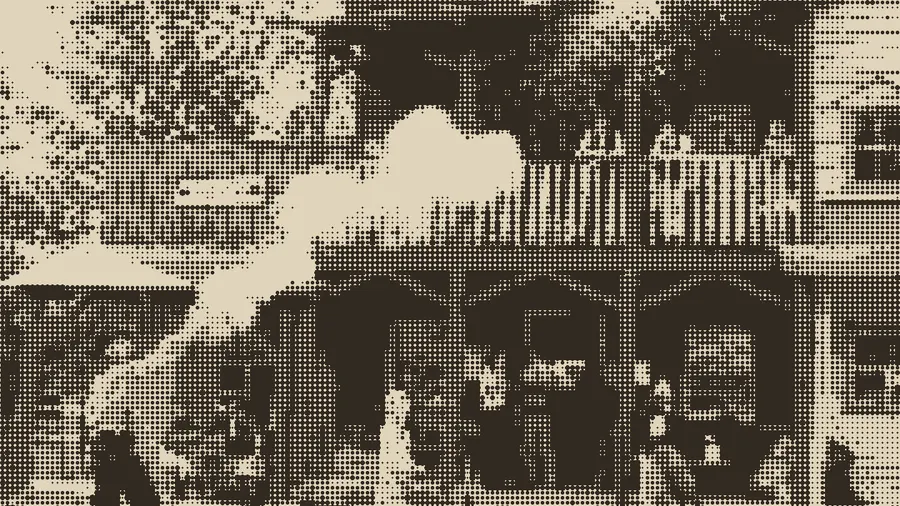

Vyhlašuje se všem rodinám, školám a oddílům
Westernové městečko
Stonetown
v lesích u Humpolce
Skutečné westernové městečko v lese u Kamenice. Banka, úřad šerifa, kavárna, kasino, obchod a kostel se zvonem. Žádný dům tu není jen kulisa: do všech se dá vejít.
Luk, laso, tomahawk i rýžovací pánev dostanete do ruky. Postavila to parta kamarádů vlastníma rukama a staví dál.
